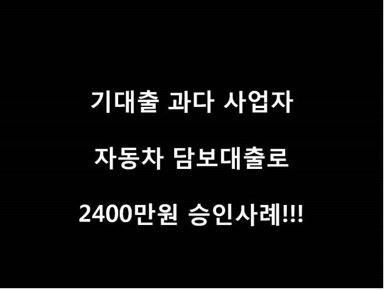
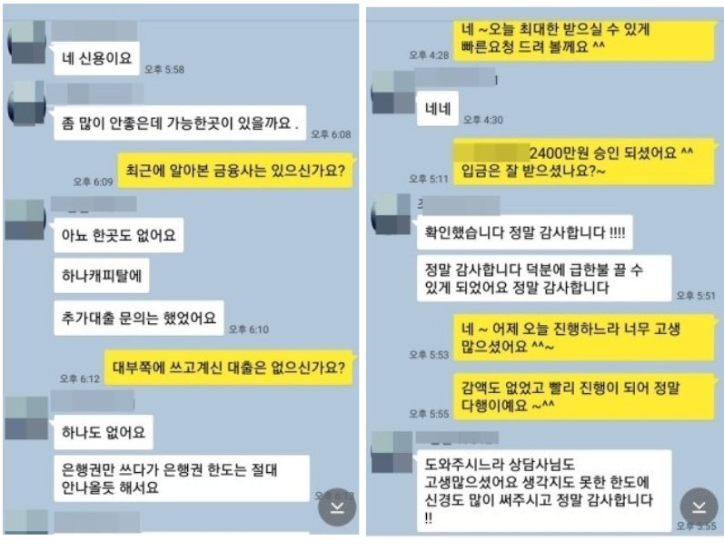

기대출 과다 사업자, 자동차담보대출로 2400만원 승인사례!!!

안녕하세요~ 오늘은 제가 상담드린 조**고객님의 대출 사례를 안내해 드리겠습니다.
조** 고객님의 경우 사업기간 1년 6개월, 년 매출5000만원의 음식점을 운영하시는 사업자 분이셨습니다.
사용중이신 대출은 하나캐피탈 3514만원, 농협은행 3880만원, 신한은행 660만원으로 소득대비 채무가
많으셨습니다. 최근 대출로 신용등급이 많이 떨어져 있으신 상태라 추가대출이 쉽지 않은 상황이였습니다.
저는 본인명의 차량이 있으신 부분을 확인 후 충분히 가능성이 있다고 판단되어 진행을
도와드렸고, 그 결과 차량담보와 사업자조건으로 2400만원 승인되셨고 고객님께서도 매우 만족해
하셨습니다. 아래는 저와 조**고객님의 카톡상담 내용 일부를 캡쳐한것이오니, 참고하시어 많은
도움 되셨으면 좋겠습니다. 감사합니다. ^^
